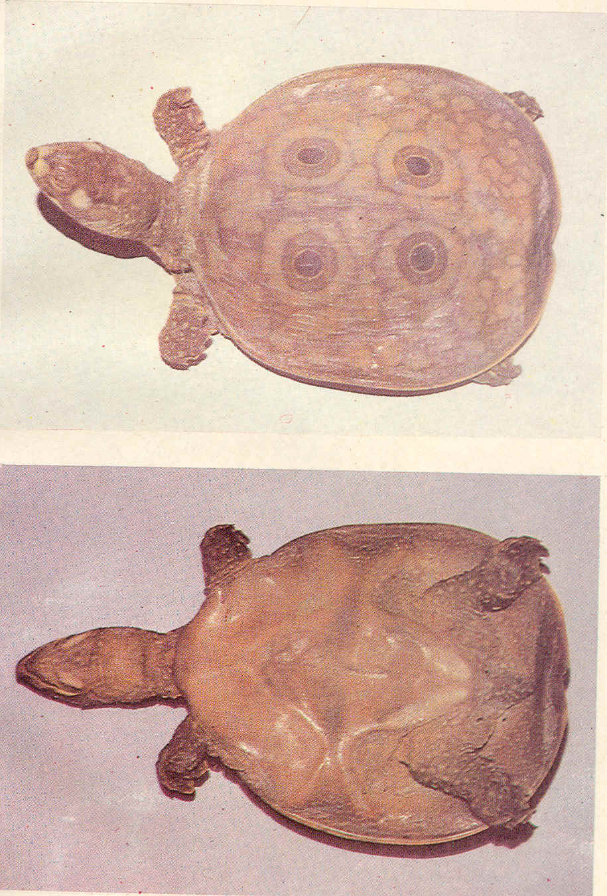

|
Digitized
Inventory of Animal Resources: Reptilia |
Trionyx hurum Gray 1831
Taxonomic
Details
----- Scientific Name
----- Classification
----- Synonyms
----- Common Names
Other
Biological Details
----- Habit and
Habitat
----- Distribution
---------- Extent of
Occurrence
---------- Area of
occurrence
---------- Altitude
---------- Population
-----
Conservation Status
-----
Diagnostic
Features
-----
Breeding system
Miscellaneous
Information
Literature
Scientific Name : Trionyx hurum Gray 1831
Family :
Classification:
Synonyms:
Aspideretses
hurum (
Gray, 1831 )
Common Names: Peacock
marked soft shelled turtle
Other Biological Details Threat : Possibly vulnerable on account of habitat destruction and large scale exploitation of eggs and adult for food
Prefer to live in ponds and occasionally bask on stones and logs projecting form the water. They are equally comfortable on land also and sometimes are found far away from water. omnivorous
Extent of Occurrence
Area of occurrence:
Altitude:
Population:
Conservation status: Indeterminate
Size : Gigantic soft shelled species reaches a length of 60 cm or more.
Body : Head is comparatively large, snout is prominently projecting down turned and is longer than the diameter of the orbit. Other characters similar to that of T. gangeticus.
Carapace
:
Similar to that of T.
gangeticus
Colouration : Dorsum is olive green, reticulated with black and generally with four striking ocelli ( Like the peacock eye) with a narrow yellow rim and large number of broken longitudinal markings. Head is dark green with several yellow spots. Carapace, ocelli and yellow head spots become less distinct with the advancement of age. A pale yellow spot across the snout is always present. Plastron is ivory white.
Breeding system:.Nesting : Not much known about the species
